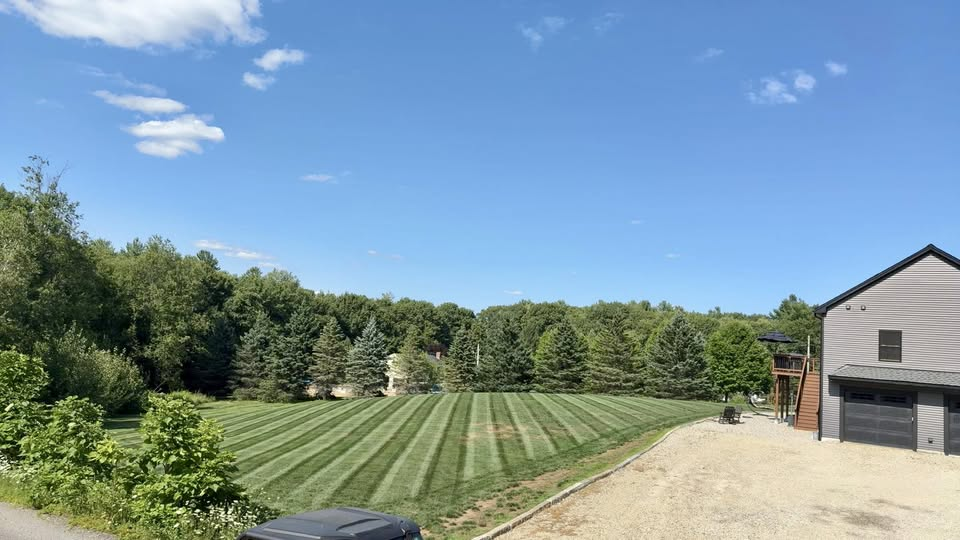
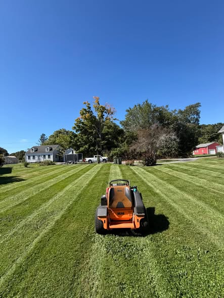
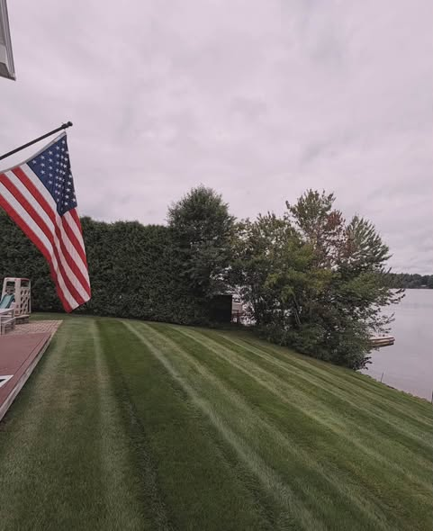
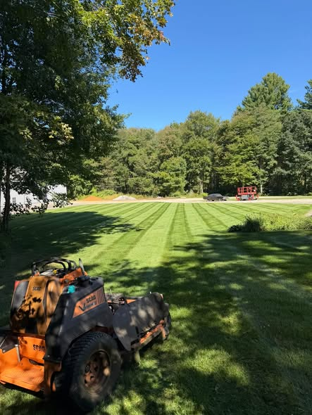
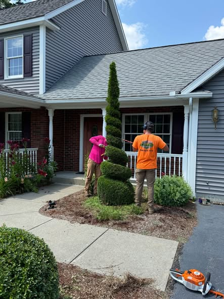
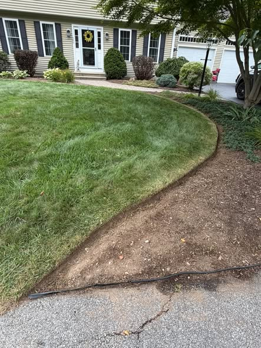
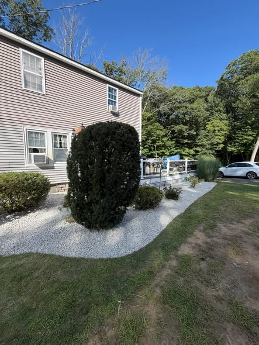

Spring and fall cleanups
Leaves, beds, debris, and the reset before the next season.
Homepage concept by Creative Tugs
Book a callWorcester County · Landscape company
High quality landscaping for homes across Central Massachusetts. Mowing, beds, hedges, stone, and the fall cleanup that gets a property ready for winter.

Now booking
Get the property cleaned up and ready for winter. Call or text 508-523-7312 for a free quote.

Services
Maintenance, planting, stone, and the end-of-season work on the schedule now.
Leaves, beds, debris, and the reset before the next season.
Mowing that leaves a stripe, through the last weeks of the season.
Beds cut back to a clean line, then finished so the lawn stops where it should.
Shrubs, bushes, and shaped evergreens brought back into form.
Gravel and stone beds around plantings, walks, and the front of the house.
A plan for the property, then the work to put it in the ground.
The built parts of the yard, set with the planting and the lawn.
Aeration and overseeding, light excavation, brush cleanup, and last-minute pruning.
On the property
Recent jobs: a long cut, a fresh bed line, stone around the plantings, and a shrub shaped at the door.





Auburn
A long-time customer bought a home in Auburn and called to get the property sorted. The bushes were pruned, the beds got a fresh edge, and the weeds came out. Phase two is the overgrown trees and bushes, plus the fall cleanup.
Spencer
A large residential property in Spencer stays on the mowing route. Drone footage of it went up in September. The stripe is the weekly proof. The cleanup is how the season ends.
Free quote
Fall spots are limited. Send the town and the work, or just call.